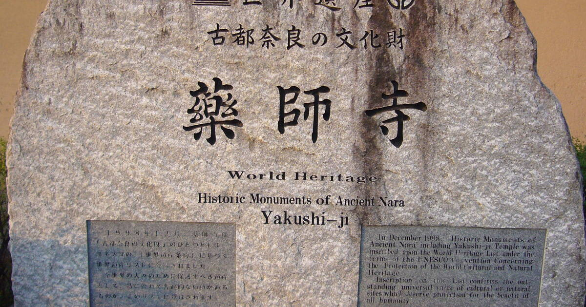

For centuries the hub of Japanese culture, the lovely unspoiled city of Nara is home to a large number of historic buildings, along with important national treasures and works of art. In addition to its many historic streets, the city boasts numerous important old temples. These includ the magnificent seventh-century Kofuku-ji Temple, perhaps the best known of the Seven Great Temples of Nara; and the splendid eighth-century Todai-ji (Great East Temple), famous for its huge bronze statue of the Great Buddha (Daibutsu), cast here in AD 749. Also of interest in Todai-ji are its Great South Gate (Nandaimon). This spectacular two-story structure is borne on 18 columns, with two Nio statues standing eight meters tall, and it guards the temple entrance.

Also of note here is the Hall of the Great Buddha, the world's largest timber building. The UNESCO World Heritage Site Historic Monuments of Ancient Nara encompasses eight places in the old capital Nara in Nara Prefecture, Japan. Five are Buddhist temples, one is a Shinto shrine, one is a Palace and one a primeval forest. The properties include 26 buildings designated by the Japanese Government as National Treasures as well as 53 designated as Important Cultural Properties. All compounds have been recognized as Historic Sites. The Nara Palace Site was designated as Special Historic Site and the Kasugayama Primeval Forest as Special Natural Monument. Tōdai-ji, Kōfuku-ji and the Kasugayama Primeval Forest overlap with Nara Park, a park designated as one of the "Places of Scenic Beauty" by the Ministry of Education, Culture, Sports, Science and Technology (MEXT). UNESCO listed the site as World Heritage in 1998.